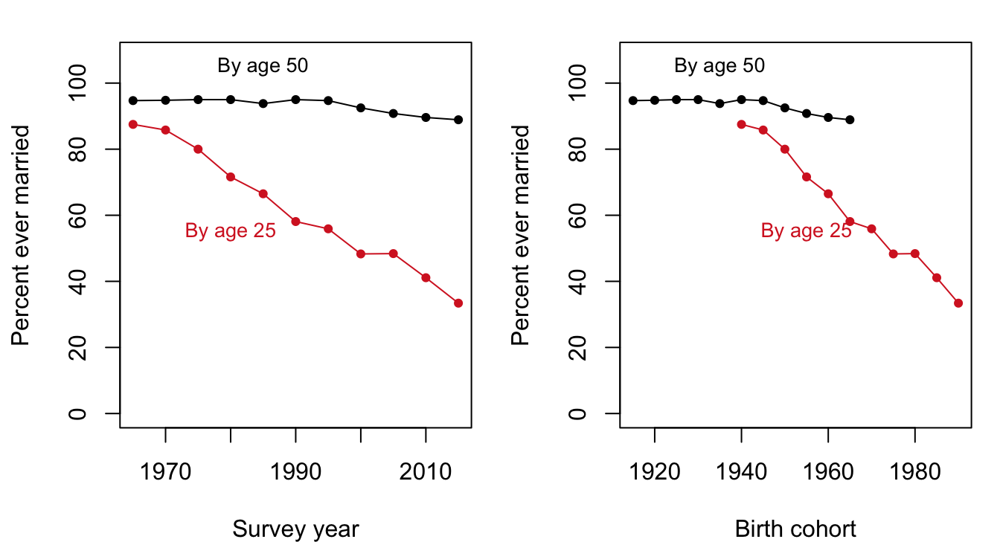
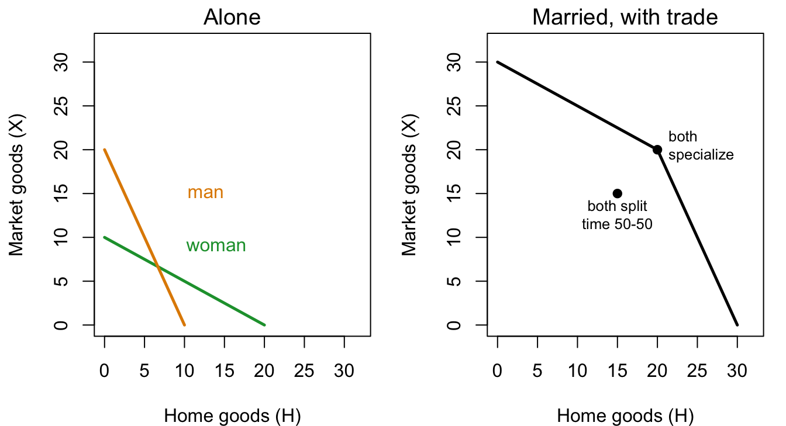

Margin tags mark material that is not in the course slides or lab. Added · from readings comes from the assigned readings (Stevenson and Wolfers 2007; Becker 1973; Becker’s Treatise on the Family). Added · new is from outside the course materials (my framing, general knowledge, or my own analysis) and needs the closest check. Untagged material follows the 2025 slides (19–20) and the marriage lab.
In this chapter. Why do people marry, when they could simply live alone or with roommates? Gary Becker’s answer treats a marriage like a small firm with “gains from trade.” We look at what those gains are, why they may be shrinking, what that means for divorce, and then who marries whom: Becker’s theory of the marriage market and of “assortative mating.” We end with data on who marries whom in California.
Readings this chapter draws on. Stevenson and Wolfers (2007), “Marriage and Divorce: Changes and their Driving Forces”; Becker (1991), “The Evolution of the Family,” Chapter 11 of A Treatise on the Family, pp. 342–361; Becker (1973), “A Theory of Marriage: Part I,” Sections 1, 2, and 5.
Added · new Roadmap paragraph written for the chapter split.
The chapter has three parts. The first asks why people marry: the facts to explain, Becker’s theory of the gains to marriage, and the role of comparative advantage. The second looks at the evolution of the family and divorce, and why the gains from marriage may be shrinking. The third asks who marries whom, using Becker’s theory of the marriage market and data from California.
13.1 Why marry? Why not?
A note on the question itself. Malthus took it for granted that everyone wants to marry. The interesting question for him was “why not?”, and his answer was “because they can’t afford it.” Gary Becker turned the question around. He asks why people marry at all. In a world where you can buy meals, cleaning, companionship, and sex, why form a long-term partnership with one other person?
Added · from readings Becker 1973, pp. 814 and 841 (Sections 1 and 5, assigned).
Becker opened his 1973 article by noting that economists had ignored marriage, “although scarce resources are used and it has been followed in some form by practically all adults in every recorded society.” Either that neglect was “a major oversight or persuasive evidence of the limited scope of economic analysis.” He bet on the first. His theory rests on two principles. First, marriage is “practically always voluntary,” so people (or their parents) marry only if they expect to be better off than single. Second, “since many men and women compete as they seek mates, a market in marriages can be presumed to exist.” He was modest about the result: “I have presented in this paper only the skeleton of a theory of marriage.”
Some things to think about as we go:
Why live together?
Why marry? What is the difference between living together and marrying?
How is forming a marriage similar to, or different from, forming a “firm”?
Why is marriage between two people, and not three or four or more? Could we use the optimum population framework (Chapter 2) here? What would the marginal product of an additional spouse have to look like for two to be optimal?
13.1.1 The facts to explain
Show the R code
op <-par(mfrow =c(1, 2), mar =c(4, 4.2, 1.5, 1))plot(nm$year, 100- nm$pct_never_married_by25, type ="o", pch =19, cex =0.7,col = col_d, ylim =c(0, 108), xlab ="Survey year",ylab ="Percent ever married")lines(nm$year, 100- nm$pct_never_married_by50, type ="o", pch =19, cex =0.7)text(1985, 99, "By age 50", pos =3, cex =0.85)text(1980, 55, "By age 25", col = col_d, cex =0.85)plot(nm$year -25, 100- nm$pct_never_married_by25, type ="o", pch =19,cex =0.7, col = col_d, ylim =c(0, 108), xlim =c(1915, 1990),xlab ="Birth cohort", ylab ="Percent ever married")lines(nm$year -50, 100- nm$pct_never_married_by50, type ="o", pch =19, cex =0.7)text(1935, 99, "By age 50", pos =3, cex =0.85)text(1955, 55, "By age 25", col = col_d, cex =0.85)par(op)

Figure 13.1: Percent ever married by age 25 and by age 50 in the United States. Left: by year of the survey. Right: the same numbers rearranged by birth cohort. Source: lecture slides.
Is marriage really declining? The share of American adults who are currently married fell from about 72 percent in 1960 to about 50 percent by the mid-2010s. But Figure 13.1 shows that the answer depends on the question. Marriage by age 25 has collapsed: from almost 90 percent of those surveyed in 1965 to about a third in 2015. Marriage by age 50 has fallen much less, from about 95 percent to about 89 percent. Rearranged by birth cohort (right panel), the same numbers show that each generation marries later, but most still marry. Marriage has been delayed, not foregone.
Added · from readings Facts in the next three paragraphs are from Stevenson and Wolfers 2007, pp. 28–33.
Stevenson and Wolfers fill in the longer history. Over the last 150 years, the U.S. divorce rate has risen while the marriage rate has fluctuated around a fairly stable mean. Marriage rose during and after the two world wars and fell in the Great Depression. The divorce rate doubled between the mid-1960s and the mid-1970s. But it then did something often overlooked: it peaked in 1981 and fell for the next quarter century. Measured against the people actually at risk, divorces fell from 22.8 per 1,000 married couples in 1979 to 16.7 in 2005. Of first marriages made in the 1970s, 48 percent had ended within 25 years, which roughly confirms the popular claim that “half of all marriages end in divorce” for that cohort. Marriages made in the 1980s and 1990s have been more stable.
Age at marriage has followed a U-shape. In 1890, the median man first married at 26; by the mid-1950s, at 23; by 2004, at 27 again. For women the age rose from 22 in 1890 to 26 in 2004, so the age gap between husbands and wives has shrunk. Marriage has also become less tied to children. In 1880, 75 percent of married people lived with their own children. By 2005 the figure was 41 percent, because of lower fertility, longer lives, later marriages, more remarriage, and more births outside marriage.
Cohabitation has grown from almost nothing before 1970. By 2002, half of American women aged 15 to 44 had cohabited at some point, and 59 percent of those entering first marriages in the early 2000s had lived with their future spouse first. Stevenson and Wolfers also show how unusual the United States is (Table 13.1): Americans marry, divorce, and remarry more than people in other rich countries. They call this “churning,” by analogy with American labor markets.
Table 13.1: Marriage, divorce, and cohabitation in seven rich countries, around 2003. Source: Stevenson and Wolfers (2007), Table 2.
U.S.
Canada
UK
France
Germany
Italy
Sweden
Marriages per 1,000 people
7.4
4.7
5.1
4.3
4.8
4.3
4.8
Divorces per 1,000 people
3.6
2.2
2.8
2.1
2.6
0.8
2.2
% of adults cohabiting
4.7
10.7
11.6
10.8
7.1
3.9
11.7
Nonmarital births (% of all)
34.6
36.2
42.3
45.2
28.0
14.9
55.4
% agreeing “marriage is an outdated institution”
10.1
22.3
25.9
36.3
18.4
17.0
20.4
Sweden is the counterpoint: low marriage, high cohabitation, and more than half of births outside marriage, an emerging norm in which “childbirth and formal marriage need not be linked.” Italy is the opposite case for divorce: very few, and those who divorce tend to stay divorced.
These are the stylized facts a theory of marriage should help us understand.
13.2 Becker’s theory of the gains to marriage
Gary Becker’s theory of marriage is an extension of the theory of international trade. Two countries trade because each gains. Becker argued that two people marry for the same reason: as long as the gains to marriage are positive, both are better off married than single. Many of these gains come from comparative advantage, which we take up in the next section. (The ideology of Becker’s examples sounds like the 1950s, and we should ask whether it still applies today.) But first, the other advantages of living as a couple.
Economies of scale. It is easier and cheaper for one person to vacuum two rooms than for each of two people to vacuum one room. A pot of noodles for two takes little more effort than a pot for one.
Household public goods. A public good is one where one person’s consumption doesn’t leave less for the other: a clean house, a view of the Golden Gate, a subscription to the internet or a magazine. A couple gets two people’s worth of enjoyment from one purchase. (The challenge, as with all public goods, is the incentive to invest: each partner would like the other to do the cleaning.)
“Own children.” Biological children are a product of both mother and father, and investments in them give utility to both parents. There are few perfect substitutes. Becker put it bluntly:
In his own words
“The obvious explanation for marriages between men and women lies in the desire to raise own children and the physical and emotional attraction between sexes. Nothing distinguishes married households more from singles households or from those with several members of the same sex than the presence, even indirectly, of children. Sexual gratification, cleaning, feeding, and other services can be purchased, but not own children: both the man and woman are required to produce their own children and perhaps to raise them.” (Becker 1973, p. 818)
Marriage-specific capital. Think of a firm. Some of what a worker learns on the job is worth something only at that particular firm; if they change employers, it is lost. Marriages build up the same kind of capital: learning a partner’s preferences and how to get along, learning who has a comparative advantage at what, getting to know the in-laws. The important point is that a contract to stay together gives each partner an incentive to invest in this capital. Without one, such investments are risky.
So why not just live with roommates? Roommates can also benefit from economies of scale and public goods, and even from trade. Becker’s answer points to own children. And a marriage contract, unlike a roommate contract, encourages investments in relationship-specific capital.
Added · from readings Becker 1973, pp. 818–820 (Section 2, assigned).
Becker made the roommate point himself. “Economies of scale may be secured by joining households, but two or more males or females could equally well take advantage of these economies and do so when they share an apartment and cooking. Consequently, the explanation of why men and women live together must go beyond economies of scale.” His explanation is complementarity: the partners’ time and skills are not perfect substitutes for each other, or for anything that can be bought. A single person can’t produce a small-scale version of what a couple produces together, so each partner’s time is worth more to the other than it costs. Becker even explained why marriage usually joins one man and one woman. Several men sharing one wife is rare because “it would be difficult to identify the father of a child.” One man with several wives avoids that problem, and such marriages “have been more common.” But if there are about as many men as women, every polygamous household leaves other men single, and with diminishing returns to adding spouses, total output is lower. So, he concluded, monogamy predominates “because it is the most efficient marital form,” and polygamy is encouraged when the sex ratio is far from one or when people differ greatly in wealth or ability.
Added · from readings The three sources of gains are from Stevenson and Wolfers 2007, pp. 40–41. The treatment of preferences, love, and Jack Sprat is from Becker 1991, pp. 122–124.
Stevenson and Wolfers summarize the economic view in one sentence: “Couples marry and stay married when the gains from marriage exceed the gains from being single.” They list three sources of gains: production complementarities (such as specialization and raising one’s own children), risk pooling, and consumption complementarities (such as shared public goods and leisure).
What about love? Becker insists it fits in. “It can be said that Mi loves Fj,” he writes, “if her welfare enters his utility function.” A man who loves a woman gains from marrying her because he can do more for her welfare, and so for his own. And differences in taste need not prevent a good match. In a footnote, Becker recalls a nursery rhyme a colleague reminded him of:
Jack Sprat could eat no fat, His wife could eat no lean; And so, betwixt them both, you see, They licked the platter clean.
13.3 Comparative advantage and specialization
Now the heart of Becker’s theory. In Becker’s world there are two kinds of activity, home production and market production. Suppose women have a comparative advantage at home, and men in the market. Then each should specialize. Why might one sex have a comparative advantage? There are three possible reasons: differences in endowments (biology); differences in investments in human capital (culture); and feedback, where small initial differences get reinforced. If each sex specializes in its comparative advantage, combined production is higher.
13.3.1 A simple example
Suppose that if each person spends all their energy on one kind of production, they can produce:
Home
Market
Woman
20
10
Man
10
20
If each splits their own time 50–50, the woman produces 10 home and 5 market goods, and the man 5 home and 10 market goods. Together: 15 home goods and 15 market goods. Can they do better? If each specializes completely, the woman produces 20 home goods and the man 20 market goods. The couple has more of both. Figure 13.2 shows the same logic with production possibility frontiers.

Figure 13.2: Production possibility frontiers for home goods (H) and market goods (X). Left: each person alone. Right: the couple. The couple’s frontier (black) lies outside the 50–50 split (point marked), because each partner specializes in what they do relatively best.
How are the gains divided? One spouse compensates the other: they agree on an exchange rate of market goods for home goods. These terms of trade are subject to negotiation and don’t have to be one-for-one, as long as both parties benefit.
13.3.2 Notes on comparative advantage
A surprising result: specialization pays even if one person is a more efficient producer of both goods. All that matters is that their relative efficiency differs. One way to see this is through opportunity cost: the opportunity cost of a home good is the number of market goods you could have produced in the same time (the slope of your production possibility frontier). If two people have the same opportunity costs, there are no gains from specialization and trade. If their opportunity costs differ, there are gains to trade, even if one person is better at everything. Becker calls these gains the “gains to marriage.”
What does comparative advantage theory imply for marriage when:
men and women become more alike in their skills and wages?
fertility falls?
home technology improves?
the couple is of the same sex rather than opposite sexes?
Added · from readings Stevenson and Wolfers 2007, pp. 41–44.
Stevenson and Wolfers give evidence on the third question. Electricity, indoor plumbing, and the appliances of the 1950s and 1960s made housework vastly more productive. One study they cite finds that a load of laundry took four hours by hand, and 41 minutes with a 1940s washing machine and dryer. Factory-prepared food helped cut food preparation and clean-up time in half between 1965 and 1990. These changes were not just labor-saving but skill-saving. “Anyone who has tried to do laundry on a scrub board or rock knows that it is quite difficult!” When housework takes less skill, the returns to specializing in it fall, and so does the gain from marriage based on specialization. The shrinking gender wage gap works in the same direction. As women’s market opportunities approach men’s, wives’ comparative advantage at home declines.
13.3.3 What raises the gain from marriage?
Added · from readings Becker 1973, pp. 820–822 (Section 2, assigned).
Becker’s 1973 article drew several predictions from this framework:
Children. Since own children are a main source of the gain, “persons desiring relatively few or low-‘quality’ children either marry later, end their marriages earlier, or do both.”
Income. A rise in property income (income from wealth) raises the gain from marriage, and a rise in wages may. “This implication runs counter to the popular opinion that poor persons marry earlier and divorce less than rich persons,” Becker wrote, “but is consistent with the empirical evidence”: in the United States, separation and divorce were less common at higher incomes.
Women’s relative wages. The gain from the division of labor is larger the lower a woman’s wage is relative to a man’s. So “an increase in the wage rate of women relative to men would decrease the incentive to marry.” As evidence, he noted that American states with higher wages for women relative to men had smaller fractions of men and women married.
Traits valued at home. Traits that raise productivity at home, such as intelligence or attractiveness, should raise the gain from marriage, which “presumably” helps explain why less attractive or less intelligent people are less likely to marry. (A footnote admits: “The statement on marriage rates by attractiveness is not based on any statistical evidence.”)
13.4 A dissenting voice
In their own words
“To remain relevant to the twenty-first century, the economics of the family will need to push beyond the production of own children and traditional notions of specialization, and seek to uncover the forces that yield the modern family form. This may mean reconceiving the notion of household production or, as we argue, extending models of the family beyond the notion of a household-based firm and toward emphasizing motivations such as consumption complementarities and insurance as central to marriage.” (Stevenson and Wolfers 2007, p. 28)
The idea of consumption complementarities is that in consumption, being alike makes marriage more fun: movies, books, politics, identity, children. If that is what marriage is increasingly about, then men and women becoming more alike should make marriage more common, not less.
Added · from readings Stevenson and Wolfers 2007, pp. 43–44.
Stevenson and Wolfers point to the rise of leisure. They cite estimates that the workweek fell from 70 hours in 1830 to 41 hours in 2002, and that leisure over the last 40 years has risen by the equivalent of 5 to 10 extra weeks of vacation a year. With more time to spend together, shared tastes matter more. “As marriage comes to be built more around consumption complementarities,” they write, “we might expect it to increasingly involve the pairing of those with similar income and interests.” They also suggest a second modern motive: a couple as an insurance unit. Two earners whose job risks are unrelated protect each other against a layoff.
13.5 The evolution of the family
Added · from readings This section summarizes Becker 1991, Chapter 11, pp. 342–361 (assigned). The slides don’t cover it directly.
Becker’s assigned chapter steps back to ask how the family changed over centuries, from “traditional” to “modern” societies. “The discussion is speculative and sketched with broad strokes,” he admits, “for I am no expert on the historical and anthropological materials.”
Traditional societies. In primitive and peasant societies, life is full of uncertainty: most children die before age ten, bad weather or pests can destroy a harvest, and there are no formal insurance markets. The kinship group fills the gap. “A kinship group is a reasonably effective ‘insurance company,’” Becker writes, small enough for members to monitor each other. The family is also a school. Children learn the specialized knowledge of their elders, which is why farms stay in one family for generations and why families specialize in producing soldiers, priests, or merchants. (The great Japanese printmaker Hiroshige, Becker notes, inherited the post of Tokyo fire warden from his father.)
Because a marriage tied two families together, families controlled who their members married. Becker quotes a historian of a fourteenth-century French village: “one married a domus [a family] rather than an individual marriage partner.” In sixteenth-century England, “romantic love and lust were strongly condemned as ephemeral and irrational grounds for marriage.” Divorce was discouraged or prohibited. In England before the 1850s, a divorce required an Act of Parliament, and fewer than two were granted a year.
Modern societies. Markets now do much of what the kin group once did. Market insurance, savings, and borrowing replace family insurance. Schools and examinations replace family training and certification. As kinship matters less, children gain the freedom to choose their own spouses, and people search for mates they can love. But love is harder to judge before marriage than a family’s reputation. So “modern societies have what may appear to be a paradoxical combination of many love-marriages and high rates of divorce.” Becker has little patience for nostalgia: it “overlooks the restrictions on privacy and free choice, the very imperfect protection against disasters, and the limited opportunities to transcend family background.”
After World War II. From 1950 to 1977, Becker notes, the U.S. birth rate to married women fell by about a third, the divorce rate more than doubled, and the labor force participation of married women with young children more than tripled. “I believe that the major cause of these changes is the growth in the earning power of women as the American economy developed.” Higher earnings raise the cost of time spent at home and of raising children, and reduce the gains from a sexual division of labor, so divorce becomes more attractive. The changes feed on each other. Women who expect to work more invest more in market skills, which raises their earning power further.
Two more of Becker’s claims are worth weighing:
The welfare state. Aid to mothers with dependent children rose when more children were born and fell when a father supported them. “In effect,” Becker writes, “welfare is the poor woman’s alimony, which substitutes for husband’s earnings.” Social security, he argues, similarly weakened the ties between adult children and elderly parents.
Ideas as a response. The women’s movement provided support and arguments, but Becker believes it was “primarily a response to other forces that have dramatically changed the role of women rather than a major independent force.” His evidence is Japan, where “the women’s movement has not been influential there and the pill has been banned, yet fertility has declined by more than 40 percent since 1950.”
Becker closed with a prediction. If economic growth and the expansion of the welfare state slowed, as they did after the early 1970s, the changes in the family should slow too.
13.6 Divorce
Why do people divorce? Either the gains to marriage have become smaller than the gains to divorce, or poor information at the time of marriage led to a mismatch. And why might the gains to marriage be declining?
less specialization by sex;
fewer marriage-specific investments (children, building your own house, ties to kin);
and possibly a vicious circle.
Most divorces happen early. In 1990, the most common duration of a marriage at divorce was only about three years, with a long tail after that. The number of divorces in the United States, and the number of children involved in them, rose steeply from the early 1960s to about 1980 and then leveled off.
13.6.1 A feedback model
The vicious circle works like this. Higher divorce reduces the gains to marriage. Couples make fewer marriage-specific investments, specialization becomes riskier for women, women invest more in market training, and men become more able to do without a wife’s home production. Higher divorce also lowers the costs of divorce: there is less stigma, a better remarriage market, and fewer children. Both effects lead to still more divorce.
Added · from readings Becker 1991, p. 356; Stevenson and Wolfers 2007, pp. 30 and 48.
Both readings describe this mechanism. Becker: “a growth in the divorce rate itself eventually encourages additional divorces; divorced persons become less stigmatized and can more readily find other divorcees to marry.” Stevenson and Wolfers call it a “thick market externality”: if more people are divorced, you meet more divorced people, so remarriage after a divorce is easier, which makes divorce more attractive. The children involved changed too. The average divorce involved 0.78 children in the 1950s, 1.34 in 1968, and 0.91 in 1995.
13.6.2 Did divorce law matter?
Added · from readings Stevenson and Wolfers 2007, pp. 45–47.
Beginning in the late 1960s, many states introduced unilateral divorce: divorce at the request of either spouse, without proof of fault. Did that cause the rise in divorce? Becker, Landes, and Michael (1977) predicted it would not. By the Coase theorem, shifting the right to divorce from one spouse to the other should not change how many marriages end, since the spouses can bargain. The evidence roughly agrees. Divorce rates jumped in the two years after a state’s reform, as pent-up demand was met, and then drifted back. A decade later no effect remained. But the law did change what happens inside marriages. Stevenson and Wolfers find that female suicide and domestic violence fell in states that adopted unilateral divorce, consistent with a shift in bargaining power toward women. And newlyweds in those states invested less in marriage-specific capital, such as children or supporting a spouse through school.
13.6.3 The future, and a puzzle
The big changes came in the 1960s and 1970s. Since 1980, the divorce rate has been flat or falling, marriage has kept getting later (but not much less common), and fertility has been flat. The new pattern is divorce inequality: divorce has fallen for the more educated and risen for the less educated. Among women married in the early 1990s, about 35 percent of those without a four-year college degree had a marital dissolution within ten years, compared with about 17 percent of college graduates.
Added · from readings Stevenson and Wolfers 2007, Table 1 and pp. 34–36.
Stevenson and Wolfers document the same gap for an earlier cohort. Among those born in 1950–55, 44 percent of the first marriages of people without a college degree had ended in divorce by age 45, compared with 35 percent for college graduates. The racial gap in family structure works differently. It comes almost entirely from lower and later entry into marriage among Black Americans (78 percent of Black men and women born in 1950–55 had married by 45, against 91 percent of whites), not from higher divorce. The divorce rates of Black and white Americans who married were similar.
This raises interesting unanswered puzzles. Why is there marriage inequality at all? Wouldn’t the poor, and those with fewer resources, have the most to gain from pooling them? Why the Black–white differences? Why the differences by education and across countries? (Recall that Becker’s 1973 theory predicted that higher incomes raise the gain from marriage, against the popular view of his day.)
Added · from readings Stevenson and Wolfers 2007, pp. 48–50.
Finally, a caution about policy. On average, married people are better off than divorced people: financially, physically, and emotionally. It is tempting to conclude that policy should discourage divorce. Stevenson and Wolfers warn that this assumes “divorce causes people to be worse off, rather than that people who are worse off face a greater risk of divorce.” They also distinguish the average marriage, which is likely a happy one, from the marginal marriage that a policy would create or save, which may not be.
13.7 Who marries whom?
13.7.1 A motivating example: to marry, or not to marry
Susanne and David are deciding whether to marry. Here is what each would produce:
Susanne alone
Susanne married to David
David married to Susanne
David alone
10
8
6
2
Should they marry?
If each keeps what they produce (no trade, bargaining, or exchange), no. Susanne would go from 10 to 8.
If they can bargain, yes. Married, they produce 8 + 6 = 14, more than the 12 they produce alone. David can compensate Susanne, say by giving her 3 of his 6, so that she gets 11 and he gets 3. Both are better off.
The lessons: for a marriage to make sense, no one can be worse off. And if there is trade and bargaining, the arrangement with the highest total output should be chosen, because the spoils can be divided so that both win.
13.7.2 The household production function
Becker describes what a couple produces with a household production function:
\[
Z_{ij} = h(A_i, A_j),
\]
where \(Z_{ij}\) is the total household production of person \(i\) with attribute \(A_i\) and person \(j\) with attribute \(A_j\). “Production” here is not just food, clothing, and money. It also includes happiness, children, and more.
Added · from readings Becker 1973, p. 816 (Section 2, assigned).
In the 1973 article, the household produces its output from market goods and the time of each partner. “Household-produced commodities are numerous,” Becker wrote, “and include the quality of meals, the quality and quantity of children, prestige, recreation, companionship, love, and health status.” So they “cannot be identified with consumption or output as usually measured: they cover a much broader range of human activities and aims.”
The basic properties are simple: production increases with each partner’s attributes. Another property, whether the attributes are complements, will turn out to matter for who chooses whom.
13.7.3 Optimal sorting
A sorting of men and women into couples is optimal if no alternative is better, meaning that no one can recombine with a different partner and get a better outcome in the Pareto sense: at least one person better off and no one worse off.
Here is Becker’s example, with two men and two women. The table shows the household output of each possible couple.
M1
M2
F1
8
4
F2
9
7
Who should pair with whom? The single most productive couple is F2 and M1, with 9. But if they marry, F1 and M2 are left with 4, for a total of 13. If instead F1 marries M1 and F2 marries M2, total output is 8 + 7 = 15. That is the optimal sorting.
Added · from readings This is Becker’s own example (1973, p. 824; also 1991, pp. 111–112), and the shares are his. In his table men are the rows and women the columns, so the slide’s F1, F2 are his M1, M2 and vice versa.
Why would F2 and M1 go along, when together they could produce 9? Because in the optimal sorting, the output of each marriage can be divided so that no one can do better by switching. Becker gives one division that works: F1 gets 3 and M1 gets 5 (total 8); F2 gets 5 and M2 gets 2 (total 7). Now check the two possible “elopements.” F2 and M1 already receive 5 + 5 = 10 in their own marriages, more than the 9 they could produce together, so they have no reason to run off. F1 and M2 receive 3 + 2 = 5, more than the 4 they could produce together. Neither pair can do better, so the sorting is stable.
Added · from readings Becker 1973, p. 825.
Becker described each marriage as “a two-person firm with either member being the ‘entrepreneur’ who ‘hires’ the other at the ‘salary’” and keeps the rest as “profits.” Only the optimal sorting lets every such entrepreneur do as well as possible, given the salaries that other potential mates could command.
13.7.4 Is there a short-cut?
Usually there is no social planner deciding who marries whom. There are just individuals and a “free market.” But the optimal sorting has a property that makes it easy to find: it maximizes total output over all marriages.
In his own words
“The marriage market chooses not the maximum household commodity output of any single marriage but the maximum sum of the outputs over all marriages, just as competitive product markets maximize the sum of the outputs over all firms.” (Becker 1973, p. 824)
“Each man and woman is assumed to be concerned only about his or her own ‘selfish’ welfare, not about social welfare. In pursuing their selfish interests, however, they are unknowingly led by the ‘invisible hand’ of competition in the marriage market to maximize aggregate output.” (Becker 1991, p. 112)
Here is the 3 × 3 example from lecture:
Table 13.2: Household output of each possible couple (lecture example).
F1
F2
F3
M1
5
8
2
M2
7
9
6
M3
2
3
0
There are 3 × 2 × 1 = 6 ways to pair three men with three women. We can simply add up total output for each:
Table 13.3: Total output for each of the six possible sortings.
Sorting
Output
M1–F1, M2–F2, M3–F3
5 + 9 + 0 = 14
M1–F1, M2–F3, M3–F2
5 + 6 + 3 = 14
M1–F2, M2–F1, M3–F3
8 + 7 + 0 = 15
M1–F2, M2–F3, M3–F1
8 + 6 + 2 = 16
M1–F3, M2–F1, M3–F2
2 + 7 + 3 = 12
M1–F3, M2–F2, M3–F1
2 + 9 + 2 = 13
The optimal sorting is M1–F2, M2–F3, M3–F1, with a total of 16. Notice that the single most productive couple, M2 and F2 with 9, is not part of it.
13.7.5 Do likes marry likes?
Becker can now answer an old question: do “likes” marry, or do opposites attract? The answer depends on whether the partners’ attributes are complements or substitutes.
If the gain from an increase in your attribute is bigger when your partner has more of that attribute, the attributes are complements, and likes marry likes (“positive assortative mating”). Example: education and stimulating conversation.
If the gain from an increase in your attribute is smaller when your partner has more of it, the attributes are substitutes, and opposites attract (“negative assortative mating”). Example: a talker and a listener.
Mathematically, the condition is on the cross-derivative of the household production function:
which makes the attributes complements when \(r < 1\) and substitutes when \(r > 1\).
Added · from readings Becker 1973, pp. 826, 827, and 831.
Becker’s own summary: “the association of likes is optimal when traits are complements and the association of unlikes is optimal when they are substitutes,” because “high values of different traits reinforce each other when they are complements, and offset each other when they are substitutes.” His example of unlikes comes from psychology: “Dominant and deferential persons tend to marry each other,” perhaps because “the dominant person’s time can be used when households encounter situations calling for dominance and the deferential person’s time can be used when they call for deference.”
Table 13.4: Two lecture examples of the household production function. Left: complements (r = 1/2, attributes 1 and 9). Right: substitutes (r = 2, attributes 1 and 4). Rows are men, columns women.
A = 1
A = 9
A = 1
4
16
A = 9
16
36
A = 1
A = 4
A = 1
1.41
4.12
A = 4
4.12
5.66
With complements, pairing like with like gives \(4 + 36 = 40\), more than the \(16 + 16 = 32\) from pairing opposites. With substitutes, pairing like with like gives \(1.41 + 5.66 = 7.07\), less than the \(4.12 + 4.12 = 8.25\) from pairing opposites.
13.7.6 What does Becker predict?
Becker argued that wage rates are substitutes. By pairing a high-wage person with a low-wage person, the couple can use the cheaper time for home production and the more expensive time in the market. This is the gain from the division of labor. But traits that raise productivity at home, such as education, intelligence, or health, tend to be complements. So the theory predicts positive sorting on most traits and negative sorting on wages.
Added · from readings Becker 1973, pp. 828 and 832–833; the divorce point is from Becker 1991, pp. 117–120.
In Becker’s words: “By mating low-wage F with high-wage M and low-wage M with high-wage F, the cheaper time of both M and F is used more extensively in household production, and the expensive time of both is used more extensively in market production.”
Becker reports that the correlation between spouses’ intelligence is “about as high as that between siblings.” Even holding age and wages constant, the correlation between spouses’ years of schooling was +0.53 for white and +0.56 for Black couples (from a 1967 survey). “Apparently, the marriage market, aided by coeducational schools, admissions tests, and the like, is more efficient than is commonly believed.” In his later book he adds that people who marry outside their race, religion, age group, or education class divorce more often, which is further evidence that positive sorting on those traits is optimal.
Wages were harder. The observed correlation between husbands’ and wives’ wages was positive (+0.32 for white couples, +0.24 for Black couples). Becker argued this was biased: it could be measured only for couples where the wife worked, and a wife is more likely to work when her wage is high relative to her husband’s. His colleague Gregg Lewis calculated that a correlation of about +0.3 among couples with working wives “almost certainly implies a negative one (about −.25) for all mates.” If so, Becker wrote, this would be “striking confirmation” of the theory, “one of the few examples (and a predicted one!) of negative associative mating.”
Becker’s framework also says who stays single when the numbers of men and women are unequal. With positive sorting, the lowest-ranked members of the more numerous sex are the ones left out.
The framework is useful for understanding sorting, but it doesn’t predict the answer on its own: depending on the trait, either complementarity or substitution is possible. That makes it a question for data.
13.8 Data in action: who marries whom in California?
The marriage lab uses the 2015 American Community Survey, a continuous micro-census, restricted to California couples in which both partners were aged 19–59 and identified as Asian, Black, or white. The sample has about 34,000 couples, including a few hundred same-sex married couples.
To measure sorting, we use two tools. For numeric traits, such as age and income, the correlation between partners: positive means likes pair together, negative means opposites, zero means no relationship. For two-category traits, such as whether each partner has a four-year college degree, the odds ratio. In a 2 × 2 table, it is the odds of being in the first column for people in the first row, divided by the same odds for people in the second row. A value of 1 means no sorting, values above 1 mean positive sorting, and values below 1 negative sorting.
Table 13.5: College degree of partners, opposite-sex couples, California 2015 (ACS).
Spouse: college
Spouse: no college
Respondent: college
11,342
4,890
Respondent: no college
2,973
14,563
For opposite-sex couples, the odds ratio for college degrees is 11.4. Among college graduates, the odds that the spouse is also a graduate are 2.3 to 1. Among non-graduates, they are about 0.2 to 1. That is strong positive sorting.
Figure 13.3: Opposite-sex couples, California 2015 (ACS). Left: ages of the two partners (a random sample of 2,000 couples, jittered). Right: wage income of the two partners (same sample; incomes are top-coded).
Ages are strongly positively sorted: the correlation is 0.86. Wage incomes are a more complicated story. Many couples have one partner with zero earnings and the other with positive earnings, which looks like Becker’s specialization. But overall the correlation is close to zero (0.03). Is having zero earnings concentrated in one partner? The odds ratio for “zero wages” is 1.01, essentially no association either way.
Table 13.6: Odds ratios for same-race marriage, opposite-sex couples, California 2015 (ACS). Higher values mean fewer marriages across the line.
Pair
Odds ratio
White and Black
531
White and Asian
218
Asian and Black
2,354
All three race odds ratios are enormous, so most marriages are within race. But the odds ratios show that crossing the white–Asian divide is the most common, then the white–Black divide, and the Asian–Black divide is the rarest.
These findings are consistent with Becker’s predictions of positive sorting by race, age, and education. They are not very supportive of the negative sorting he predicted (in the 1970s) for wages. One reason may be that what people consider when choosing a spouse is potential wages before marriage, not the wages observed afterward. Education is a good measure of potential wages, because it is observed whether or not someone is in the labor force.
In the lab
In Lab 9 you’ll repeat this analysis for same-sex married couples. Before you look at the data, write down what you expect, trait by trait, and why. In 1973, Becker traced the gains to marriage to complementarity between a man’s and a woman’s time, rooted in own children and in love, which he described as “primarily between persons of the opposite sex.” What might his framework imply for how same-sex couples sort, and which of its assumptions would you change?
13.9 Key ideas
Malthus asked why people don’t marry (“they can’t afford it”). Becker asks why they do.
Becker’s gains to marriage come from economies of scale, household public goods, own children, marriage-specific capital, and, above all, comparative advantage and specialization.
Specialization pays whenever partners’ opportunity costs differ, even if one partner is better at everything.
Better home technology, smaller gender wage gaps, and lower fertility reduce the gains from specialization. Stevenson and Wolfers argue that consumption complementarities and insurance are becoming the more important reasons to marry.
Divorce can be self-reinforcing: more divorce lowers the gains to marriage and the costs of divorce. Since 1980, divorce has fallen for the more educated.
In Becker’s marriage market, the optimal sorting maximizes total output over all marriages. Likes marry likes when attributes are complements, and opposites attract when they are substitutes.
13.10 Check your understanding
Added · new Q1 and Q2 follow suggestions on the slides (19-23, 19-06). The rest are new and avoid the lab’s graded questions.
Better at everything. Redo the simple example, but suppose the man can produce at most 2 home goods or 4 market goods, while the woman can still produce 20 home goods or 10 market goods. Is the woman more efficient at both? Are there still gains from specialization? Who should specialize in what?
Why two? Use the language of the optimum population (marginal product and average product) to sketch what the “marginal product” of a third spouse would have to look like for a marriage of two to be optimal.
Susanne and David again. Suppose that, married, Susanne would produce 7 and David 4. Should they marry? What if David alone produces only 1?
No sorting. Using the lecture’s function with \(r = 1\), so that \(Z = A_i + A_j\), compute the 2 × 2 table for attributes 1 and 4. Does it matter who marries whom? Explain in terms of complements and substitutes.
Cohabitation and divorce. Couples who live together before marrying have historically been more likely to divorce. Give two explanations: one in which cohabiting causes divorce, and one in which it doesn’t.
The marginal marriage. A policy makes divorce harder to obtain. Explain why the effect on well-being depends on the marginal marriage it preserves, not the average marriage.
Becker’s evidence. Becker uses Japan to argue that the women’s movement was not the main cause of postwar changes in the family. What makes Japan a useful test case? What would make it a weak one?
Odds ratios. In a table where 30 couples are both college graduates, 10 have only a graduate husband, 20 have only a graduate wife, and 40 have neither, what is the odds ratio? Is there positive or negative sorting?
13.11 Further reading
Stevenson, Betsey, and Justin Wolfers. 2007. “Marriage and Divorce: Changes and their Driving Forces.” Journal of Economic Perspectives 21(2): 27–52. More recent changes. As you read: Which trends would Becker’s specialization theory predict, and which seem to call for something else?
Becker, Gary S. 1991. “The Evolution of the Family.” Chapter 11 of A Treatise on the Family, enlarged ed. Harvard University Press. Pages 342–361. An overview from the perspective of 1990, with a particular emphasis on the welfare state. As you read: What does Becker think caused the changes after 1950, and what does he think did not?
Becker, Gary S. 1973. “A Theory of Marriage: Part I.” Journal of Political Economy 81(4): 813–846. Read only Sections 1, 2, and 5. Don’t worry about the math. Instead read to understand how Becker conceptualizes the decision to marry. It may be best to read the conclusion first. As you read: Why does Becker say economies of scale can’t explain marriage? Which of his predictions about income and women’s wages still hold up today?